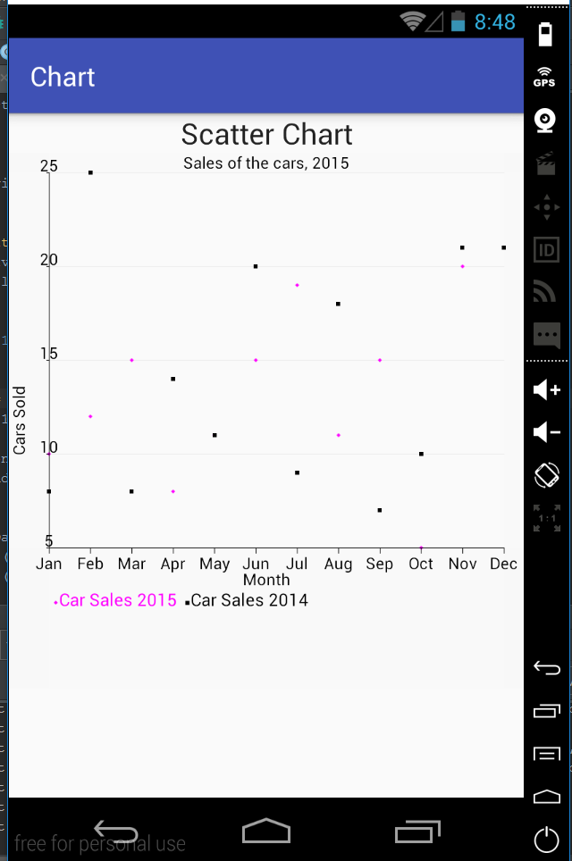

Create a new activity that will display the scatter chart. For that, create two new files: activity_scatter.xml and ScatterActivity.java. Include the new activity into the AndroidManifest.xml file:
<activity android:name=".ScatterActivity" />The scatter chart will look like this: 
The activity_scatter.xml is the same as for the line chart.
The code in ScatterActivity.java is similar to the line and area charts we have created:
public class ScatterActivity extends AppCompatActivity {
@Override
protected void onCreate(Bundle savedInstanceState) {
super.onCreate(savedInstanceState);
setContentView(R.layout.activity_scatter);
int month[] = {0, 1, 2, 3, 4, 5, 6, 7, 8, 9, 10, 11};
int carSale[] = {10, 12, 15, 8, 11, 15, 19, 11, 15, 5, 20, 21};
int carSale2014[] = {8, 25, 8, 14, 11, 20, 9, 18, 7, 10, 21, 21};
XYSeries series = new XYSeries("Car Sales 2015");
XYSeries series2014 = new XYSeries("Car Sales 2014");
for (int i = 0; i < month.length; i++) {
series.add(month[i], carSale[i]);
series2014.add(month[i], carSale2014[i]);
}
XYMultipleSeriesDataset dataset = new XYMultipleSeriesDataset();
dataset.addSeries(series);
dataset.addSeries(series2014);
XYMultipleSeriesRenderer mRenderer = new XYMultipleSeriesRenderer();
XYSeriesRenderer renderer = new XYSeriesRenderer();
XYSeriesRenderer renderer2014 = new XYSeriesRenderer();
mRenderer.addSeriesRenderer(renderer);
mRenderer.addSeriesRenderer(renderer2014);
//give the title for the chart
mRenderer.setChartTitle("Sales of the cars, 2015");
//set the size of the chart title
mRenderer.setChartTitleTextSize((float) 24.0);
//set margins and define their color as transparent
int[] margins = {30, 60, 50, 30};
mRenderer.setMargins(margins);
mRenderer.setMarginsColor(Color.argb(0x01, 0x01, 0x01, 0x01));
//set titles for axes, their size and color
mRenderer.setXTitle("Month");
mRenderer.setYTitle("Cars Sold");
mRenderer.setAxisTitleTextSize((float) 24.0);
//set the size and the color of labels
mRenderer.setLabelsColor(Color.BLACK);
mRenderer.setLabelsTextSize((float)24.0);
//set the background color of the chart
mRenderer.setApplyBackgroundColor(true);
mRenderer.setBackgroundColor(Color.TRANSPARENT);
//set if the grid will be shown
mRenderer.setShowGrid(true);
//create the array of strings for the X axis labels
String[] m = new String[] {
"Jan", "Feb" , "Mar", "Apr", "May", "Jun",
"Jul", "Aug" , "Sep", "Oct", "Nov", "Dec"
};
//add text of labels to the X axis
for(int i=0; i< month.length;i++){
mRenderer.addXTextLabel(i, m[i]);
}
//hide the labels that only their text will be shown
mRenderer.setXLabels(0);
//set color of labels and axes
mRenderer.setXLabelsColor(Color.BLACK);
mRenderer.setYLabelsColor(0, Color.BLACK);
mRenderer.setXAxisColor(Color.BLACK);
mRenderer.setYAxisColor(Color.BLACK);
//set the text size of the legend
mRenderer.setLegendTextSize((float)26.0);
renderer.setPointStyle(PointStyle.DIAMOND);
renderer.setFillPoints(true);
renderer.setColor(Color.MAGENTA);
renderer2014.setPointStyle(PointStyle.SQUARE);
renderer2014.setFillPoints(true);
renderer2014.setColor(Color.BLACK);
LinearLayout chartContainer = (LinearLayout) findViewById(R.id.scatter_chart_container);
chartContainer.removeAllViews();
GraphicalView chart = ChartFactory.getScatterChartView(ScatterActivity.this, dataset, mRenderer);
chartContainer.addView(chart);
}
}We set different point styles for each set renderer.setPointStyle(PointStyle.DIAMOND); and renderer2014.setPointStyle(PointStyle.SQUARE);. We also set that points are filled. The main difference is that we create the scatter chart view: GraphicalView chart = ChartFactory.getScatterChartView(ScatterActivity.this, dataset, mRenderer);.
The next section will be about time charts.